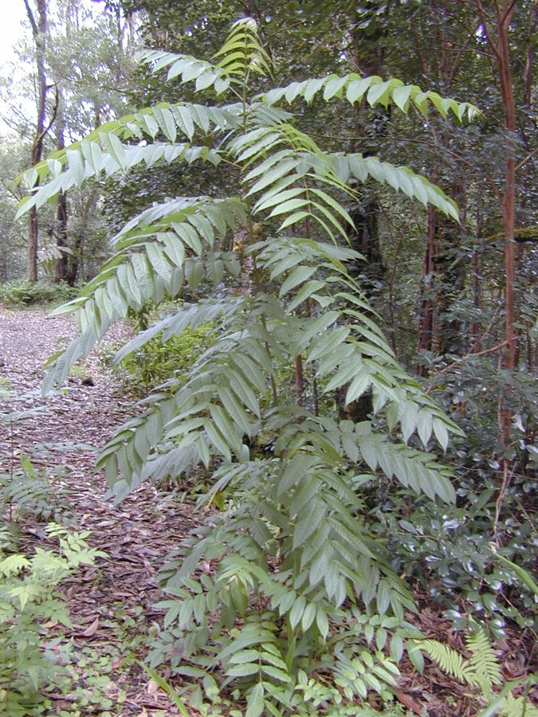

टूनIndian Toon
Toona ciliata · Meliaceae · FLR-0072

- Scientific name
- Toona ciliata M. Roem.
- Family
- Meliaceae
- Hindi
- टून
- Status here
- native
- IUCN
- LC
When to look कब देखें
Present all year.
टून / Indian Toon
Toona ciliata M. Roem. — Meliaceae
टून (तूनी / लाल देवदार / इंडियन तून) — पूर्वी उत्तर प्रदेश के नम नदी किनारों, छायादार घाटियों और गांवों के बागों में पाया जाने वाला एक विशाल, तेजी से बढ़ने वाला और पतझड़ी (deciduous) पेड़ है। यह इस क्षेत्र में पाए जाने वाले कुछ चुनिंदा व्यावसायिक इमारती लकड़ी (valuable native timber trees) देने वाले पेड़ों में से एक है जो सचमुच यहाँ का मूल निवासी (native) है, जिसके कारण यह संरक्षण की दृष्टि से अत्यंत महत्वपूर्ण है। इसकी लकड़ी हल्की, गुलाबी-लाल, सुगंधित और दीमक-रोधी (pinkish-red, fragrant, termite-resistant wood) होती है, जिसे 'भारतीय महोगनी' (Indian mahogany) भी कहा जाता है। इसका उपयोग प्रीमियम फर्नीचर, वाद्य यंत्र (जैसे सितार और तानपूरा), और प्लाईवुड बनाने के लिए किया जाता है। वसंत ऋतु (मार्च-अप्रैल) में इस पर छोटे सफ़ेद फूलों के गुच्छे आते हैं, और इसके नए निकलने वाले लाल कोमल पत्तों (young red shoots) को कुछ क्षेत्रों में सब्जी के रूप में खाया जाता है।
Quick Identification त्वरित पहचान
| Feature | Description |
|---|---|
| Tree habit | Large deciduous tree up to 20–30 meters high, with a straight trunk and a dense, spreading, rounded canopy |
| Leaves | Pinnate compound leaves, measuring 30–60 cm, with 10–24 lance-shaped, long-pointed leaflets |
| Flowers | Very small, bell-shaped, honey-scented, white or cream flowers, in large, drooping terminal clusters |
| Fruit | A small, dark brown, woody, capsule (1.5–2.5 cm); when ripe, it splits open into a beautiful 5-pointed star |
| Seeds | Tiny, light brown, oblong seeds, containing a thin papery wing at both ends to slide through the air |
Field tip: Look in damp valleys or near permanent riverbanks. Search for a very large tree with long leaves made of many lance-shaped leaflets. In June, look on the ground under the tree for tiny, dry, woody star-shaped capsules that have split into 5 star-like points.
Morphology आकारिकी
Biometrics (typical measurements of mature trees in the northern Indian plains):
| Measurement | Range |
|---|---|
| Tree height | 20–30 m |
| Trunk diameter (DBH) | 60–120 cm |
| Leaf length | 30–60 cm |
| Leaflet length | 7.0–12.0 cm |
| Flower length | 5–6 mm |
| Capsule length | 1.5–2.5 cm |
Trunk and Bark: The trunk is straight, often reaching a massive diameter in old trees. The bark is dark greyish-brown, rough, developing long, vertical cracks and scaling off in irregular flakes.
Foliage: Alternately arranged, even-pinnate leaves (lacking a terminal leaflet). The leaflets are opposite or sub-opposite, lanceolate, smooth, and green, with a slightly wavy margin.
Flowers: Small, white, bisexual, emitting a honey-like scent, arranged in large, drooping terminal panicles.
Fruit and Seeds: The capsule is oblong-ellipsoid, woody. When dry, it splits open from the apex into 5 woody valves, releasing 20–30 tiny, light brown, double-winged seeds.
Associated Species / Interactions संबंधित प्रजातियाँ
- Wind dispersal: The papery, double-winged seeds are adapted for wind dispersal (anemochory), spinning through the air when released in summer.
- Pollinators: Honeybees (Apis mellifera) visit the flowers in large numbers for honey.
- Larval Host: Host to the caterpillars of the Toon Shoot Borer moth (Hypsipyla robusta).
Pests and Diseases कीट और रोग
- Toon Shoot Borer: Hypsipyla robusta is the most serious pest. The larvae bore into the tender growing shoots and feed inside, causing tip dieback and stunted growth in young saplings.
- Leaf Spot Fungus: Macrophoma species cause brown spotty lesions on foliage during monsoon humidity.
- Termites: Although the mature heartwood is highly resistant, termites can attack the soft sapwood of dead or dying branches.
Traditional and Ethnobotanical Use पारंपरिक और नृवंशवनस्पति उपयोग
- Premium Musical Timber: The light, pinkish-red, resonant wood is highly valued by instrument makers, used to construct the soundboxes of sitars, tanpuras, and sarods.
- Natural Yellow Dye: The small white flowers contain a natural coloring compound (nyctanthin) and are boiled in water to prepare a bright yellow dye, used to color fabrics.
- Edible Young Shoots: The tender, reddish young shoots are harvested in early spring, boiled to remove bitterness, and cooked as a vegetable in some tribal communities.
- Traditional Astringent Wash: The bark is boiled in water to prepare a bitter, astringent decoction, used traditionally in Ayurvedic practices to treat diarrhea, dysentery, and clean skin wounds.
Expected Locally स्थानीय रूप से अपेक्षित
Not a field record. Written from published accounts for eastern Uttar Pradesh. No confirmed local sighting yet — if you have seen it, that is what the atlas needs.
अभी तक स्थानीय पुष्टि नहीं। यह विवरण प्रकाशित स्रोतों से है, किसी अवलोकन से नहीं।
A grand native tree found along the moist river channels and old homestead borders of the Basti district. They are regularly observed in the Harraiya and Vikramjot blocks near the Rapti and Saryu riverbanks. Residents value toon for its durable wood, although it is slower-growing than commercial hybrid eucalyptus and is now becoming less common, highlighting its local conservation need.
Distribution वितरण
Global range: Native to the subtropical and tropical zones of South Asia (India, Nepal, Bangladesh), Southeast Asia, and eastern Australia.
In India: Widespread in the moist deciduous forests of the Western Ghats, Himalayan foothills, and eastern plains.
In Uttar Pradesh: Distributed in all moist plains and riverine districts.
In Basti district / eastern UP: Regularly recorded in rural blocks with moist, deep soils.
Research Questions शोध प्रश्न
Anyone can investigate these | कोई भी इन प्रश्नों की जाँच कर सकता है
- How many meters can a double-winged Toon seed travel from a 20-meter tall tree during dry summer winds? — Measure and record seed wind dispersal.
- Does the Toon Shoot Borer attack young trees in open sunny fields more than those in shaded village groves? — Survey shoot damage in different plots.
- What is the average number of star-shaped dry capsules found on a 1-meter square forest floor in June? — Conduct capsule counts.
- How long does it take for a Toon seed to germinate when sown in moist sandy loam soil? — Record germination times.
- Does the pink wood of Toon resist local wood-boring beetles better than the soft wood of Gulmohar? / क्या टून की गुलाबी लकड़ी गुलमोहर की तुलना में स्थानीय लकड़ी खाने वाले कीड़ों के हमलों का अधिक प्रतिरोध करती है? — Test and compare wood sample decay.
Similar Species मिलती-जुलती प्रजातियाँ
| Species | How to tell apart | comparison |
|---|---|---|
| Chinaberry (Melia azedarach) | Has bipinnate compound leaves; lilac flowers; fruit is a round yellow toxic berry | बकाइन — द्विपक्षीय बारीक पत्तियां, विषैले पीले फल |
| Neem (Azadirachta indica) | Has curved simple pinnate leaves; flowers are white; fruit is a green-yellow edible drupe | नीम — मुड़े हुए पत्ते, सफेद फूल, मीठे फल |
| Indian Beech (Millettia pinnata) | Has larger pinnate leaflets (5–9 count); pinkish pea-like flowers; flat woody oval pods | करंज — बड़े चौड़े पत्ते, मटर जैसे फूल, काठ की फलियाँ |
Field rule: Large tree with rough grey-brown fissured bark, pinnate leaves with long-pointed lanceolate leaflets, terminal drooping clusters of small white flowers, and small woody star-shaped dry fruits, is the Indian Toon.
Taxonomy & Classification वर्गीकरण
Original description. Max Joseph Roemer described the Indian Toon as Toona ciliata in 1846 in his Familiarum Naturalium Regni Vegetabilis Synopses Monographicae (Vol. 1, p. 139). The type locality was listed as India. The genus name Toona is derived from the Sanskrit and Hindi name toon. The specific name ciliata is Latin for fringed with hairs, referencing the hairy margins of the flower petals.
Subspecies. Monotypic — no subspecies are currently recognised.
Family and order placement. Placed in the order Sapindales, family Meliaceae (mahogany family), subfamily Cedreloideae, tribe Cedreleae.
Phylogenetic notes. The genus Toona contains approximately 5 species of trees, closely related to the New World genus Cedrela (Spanish cedar), both characterized by fragrant, reddish-brown wood and winged seeds.
IUCN status rationale. Assessed as Least Concern (LC) by the IUCN Red List (assessed by the IUCN SSC Global Tree Specialist Group). It has a wide distribution, though wild populations are under pressure from habitat fragmentation and logging.
Photo Gallery फोटो गैलरी
References संदर्भ
- Roemer, M. J. (1846). Familiarum Naturalium Regni Vegetabilis Synopses Monographicae. Weimar, Vol. 1, p. 139. [original description]
- Brandis, D. (1906). Indian Trees. Archibald Constable & Co., London.
- Troup, R. S. (1921). The Silviculture of Indian Trees. Oxford University Press.
- Edmonds, J. M. (1995). Toona (Meliaceae). Flora Malesiana.
- World Flora Online (2024). Toona ciliata taxon details.
- GBIF Occurrence Data — Toona ciliata, India (2010–2025).
Source file: species/flora/trees/indian_toon.md